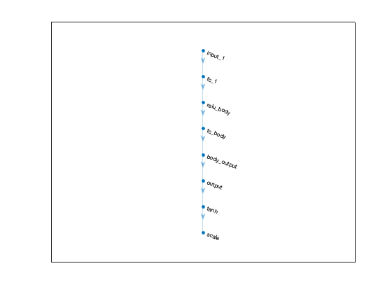
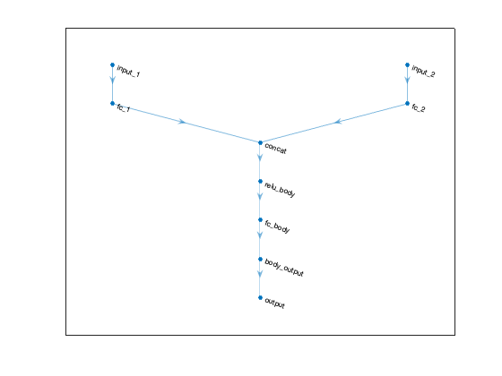
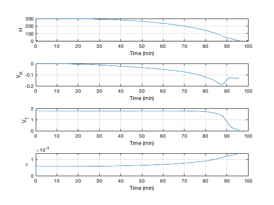

Contents
Train the lander network
See also TitanLanderClass, rlTrainingOptions, train, sim, TimeLabel, PlotSet
env = TitanLanderClass; obsInfo = getObservationInfo(env); actInfo = getActionInfo(env); disp(obsInfo); disp(actInfo); initOpts = rlAgentInitializationOptions('NumHiddenUnit',128); agent = rlDDPGAgent(obsInfo,actInfo,initOpts); agent.AgentOptions.NoiseOptions.StandardDeviationDecayRate = 1e-5; agent.AgentOptions.NoiseOptions.StandardDeviationMin = 0.001*agent.ActionInfo.UpperLimit; actorNet = getModel(getActor(agent)); criticNet = getModel(getCritic(agent)); NewFigure('Actor Network') plot(layerGraph(actorNet)) NewFigure('Critic Network') plot(layerGraph(criticNet)) disp('Critic Network') disp(criticNet.Layers) disp('Actor Network') disp(actorNet.Layers) doTraining = true; maxsteps = 2520; maxepisodes = 5000; trainingOpts = rlTrainingOptions(... 'MaxEpisodes',maxepisodes,... 'MaxStepsPerEpisode',maxsteps,... 'Verbose',true,... 'Plots','training-progress',... 'StopTrainingCriteria','EpisodeReward',... 'StopTrainingValue',595); if( doTraining ) % Train the agent trainingStats = train(agent,env,trainingOpts); end
rlNumericSpec with properties:
LowerLimit: -Inf
UpperLimit: Inf
Name: "Lander States"
Description: "r v_r v_t"
Dimension: [3 1]
DataType: "double"
rlNumericSpec with properties:
LowerLimit: 0
UpperLimit: 0.2618
Name: "Control"
Description: [0×0 string]
Dimension: [1 1]
DataType: "double"
ans =
Figure (2: Actor Network) with properties:
Number: 2
Name: 'Actor Network'
Color: [0.94 0.94 0.94]
Position: [560 528 560 420]
Units: 'pixels'
Use GET to show all properties
ans =
Figure (3: Critic Network) with properties:
Number: 3
Name: 'Critic Network'
Color: [0.94 0.94 0.94]
Position: [560 528 560 420]
Units: 'pixels'
Use GET to show all properties
Critic Network
9×1 Layer array with layers:
1 'concat' Concatenation Concatenation of 2 inputs along dimension 1
2 'relu_body' ReLU ReLU
3 'fc_body' Fully Connected 128 fully connected layer
4 'body_output' ReLU ReLU
5 'input_1' Feature Input 3 features
6 'fc_1' Fully Connected 128 fully connected layer
7 'input_2' Feature Input 1 features
8 'fc_2' Fully Connected 128 fully connected layer
9 'output' Fully Connected 1 fully connected layer
Actor Network
8×1 Layer array with layers:
1 'input_1' Feature Input 3 features
2 'fc_1' Fully Connected 128 fully connected layer
3 'relu_body' ReLU ReLU
4 'fc_body' Fully Connected 128 fully connected layer
5 'body_output' ReLU ReLU
6 'output' Fully Connected 1 fully connected layer
7 'tanh' Tanh Hyperbolic tangent
8 'scale' ScalingLayer Scaling layer
Episode: 1/5000 | Episode reward: 438.08 | Episode steps: 572 | Average reward: 438.08 | Step Count: 572 | Episode Q0: 269.36
Episode: 2/5000 | Episode reward: 237.26 | Episode steps: 542 | Average reward: 337.67 | Step Count: 1114 | Episode Q0: 302.49
Episode: 3/5000 | Episode reward: 278.28 | Episode steps: 474 | Average reward: 317.87 | Step Count: 1588 | Episode Q0: 308.85
Episode: 4/5000 | Episode reward: 184.71 | Episode steps: 348 | Average reward: 284.58 | Step Count: 1936 | Episode Q0: 310.10
Episode: 5/5000 | Episode reward: 320.93 | Episode steps: 591 | Average reward: 291.85 | Step Count: 2527 | Episode Q0: 312.37
Episode: 6/5000 | Episode reward: 139.38 | Episode steps: 458 | Average reward: 232.11 | Step Count: 2985 | Episode Q0: 313.59
Episode: 7/5000 | Episode reward: 58.67 | Episode steps: 360 | Average reward: 196.40 | Step Count: 3345 | Episode Q0: 312.95
Episode: 8/5000 | Episode reward: 38.07 | Episode steps: 404 | Average reward: 148.35 | Step Count: 3749 | Episode Q0: 310.03
Episode: 9/5000 | Episode reward: 720.32 | Episode steps: 574 | Average reward: 255.48 | Step Count: 4323 | Episode Q0: 307.92
  Simulate
simOptions = rlSimulationOptions('MaxSteps', 2000); experience = sim(env,agent, simOptions); t = experience.Observation.LanderStates.Time'; x = experience.Observation.LanderStates.Data; u = experience.Action.Control.Data; u =[0 reshape(u,1,size(u,3))]; % Scale x = reshape(x,3,size(x,3)); xP = [x;u]; yL = {'H' 'V_R' 'V_T' '\alpha'}; xP(1,:) = xP(1,:) - 2575; [t,tL] = TimeLabel(t*env.Ts); PlotSet(t,xP,'x label',tL,'y label',yL,'figure title','Time history');
Copyright
Copyright (c) 2019, 2022 Princeton Satellite Systems, Inc. All rights reserved.